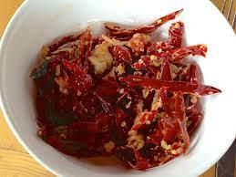

Best Haker Food In BHUTAN
You must try hawker food recommended by Kinlay lhendup.
Ema datsi

- Ema datshi (Dzongkha: ཨེ་མ་དར་ཚིལ་; Wylie: e-ma dar-tshil) is a spicy Bhutanese stew made from hot chili peppers and cheese. It is among the most famous dishes in Bhutanese cuisine, recognized as a national dish of the country. "Ema" means "chili" and "datshi" means "cheese" in the Dzongkha language..
Momo
- Momos are a type of steamed filled dumpling in Tibetan and Nepali cuisine that is also popular in neighbouring Bhutan and India. Momos are usually served with a sauce known as achar influenced by the spices and herbs used within many South Asian cuisines. It can also be cooked as soup versions known as jhol momo where the broth is made from achar using a mixture of tomatoes, sesame seeds, chillies, cumin and coriander or mokthuk from boiling pork/buffalo bones mixed with various herbs and vegetables.
Shakam Datsi
- Shakam is Bhutanese dried beef, which is among the most famous of meats. The beef is dried and preserved so it tastes similar to beef jerky but thicker, and not quite completely dehydrated. For shakam datshi, dried beef is cut into bite-sized pieces and simmered with cheese and butter.
BACK TO HOME